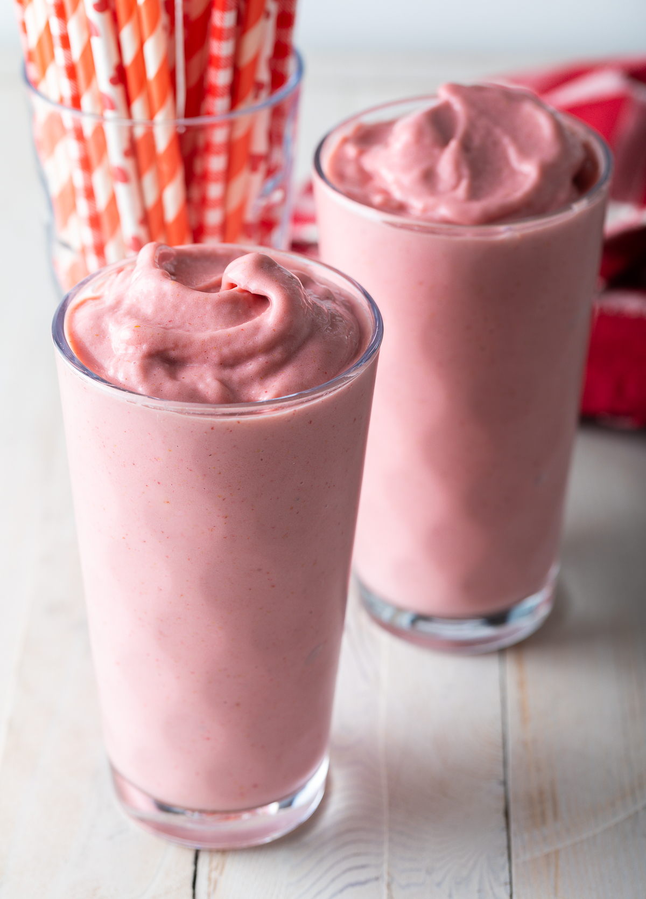

Strawberry Smoothie

Description
Here's the most perfect strawberry smoothie you'll find! It's easy to blend up and has the best creamy texture and fruity flavor.
Ingredients
- 2 cups frozen strawberries
- 1 banana (room temp)
- 1/4 cup Greek yogurt
- 1 cup milk (or almond milk or oat milk)
- 1/2 cup ice
- Optional add ins: 1 table spoon almond butter, 1/4 teaspoon vanilla, fresh mint leaves or basil leaves
Steps
- Place all ingredients in a blender, breaking the banana into pieces. Blend until creamy and frothy, stopping and scraping down the sides as necessary. If desired, garnish with a frozen strawberry and mint sprig. Serve immediately or store in a covered jar in the refrigerator for 2 days.